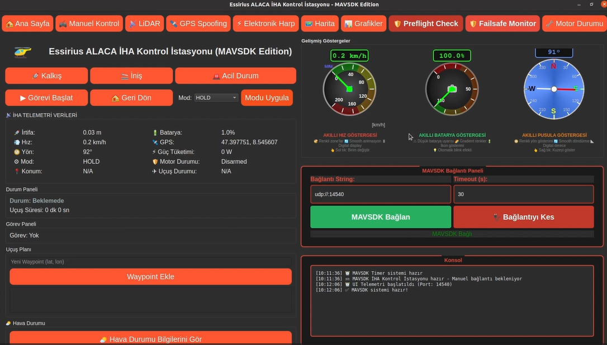
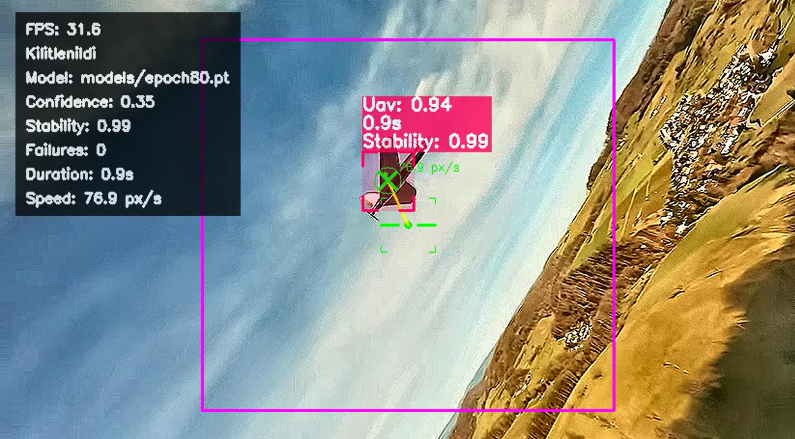
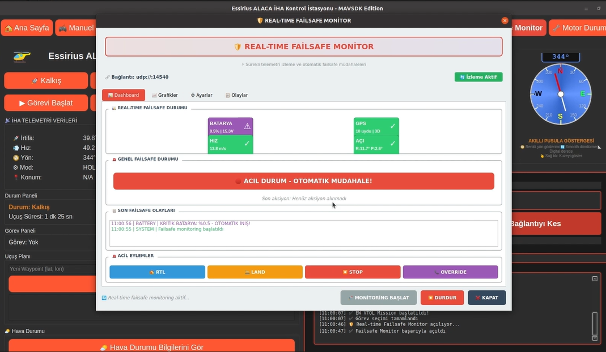
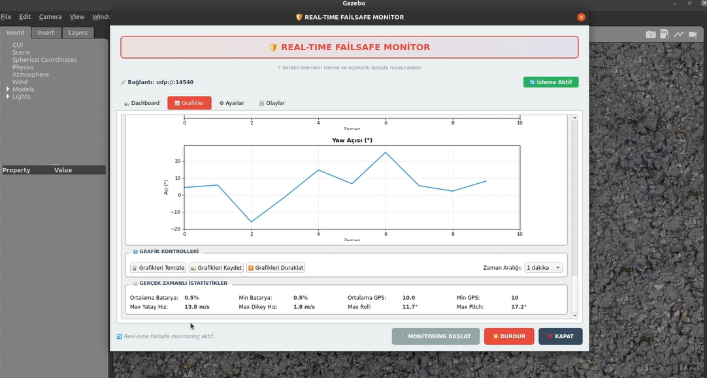
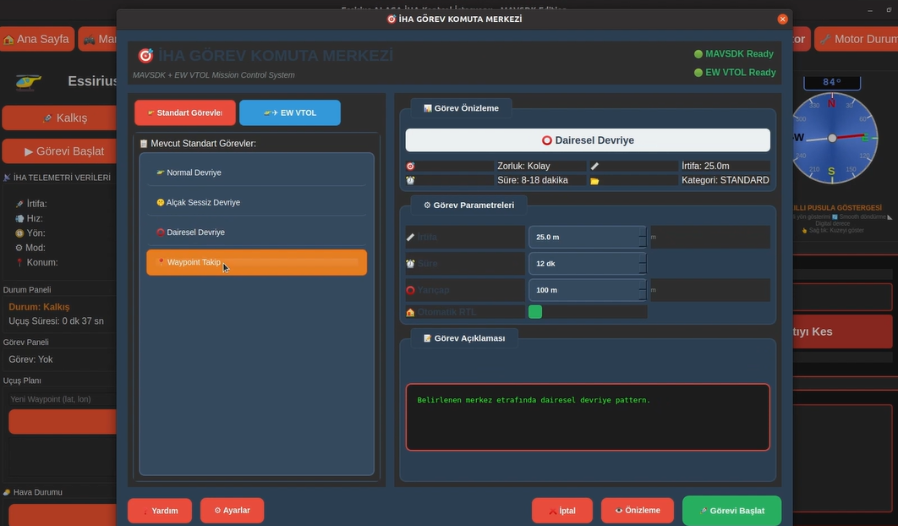
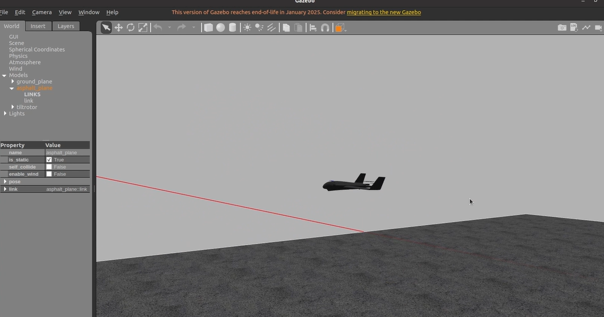
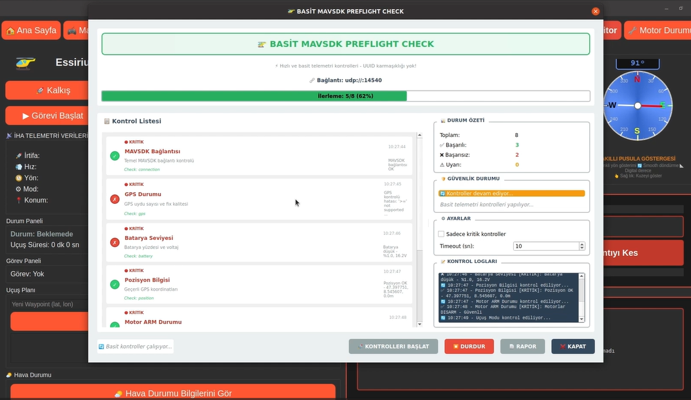
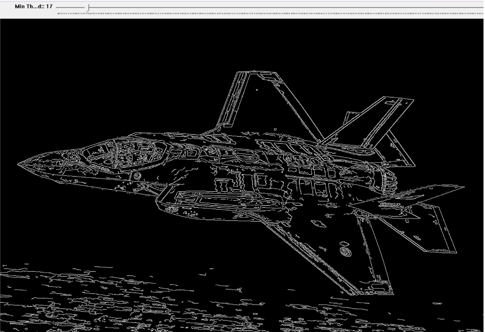
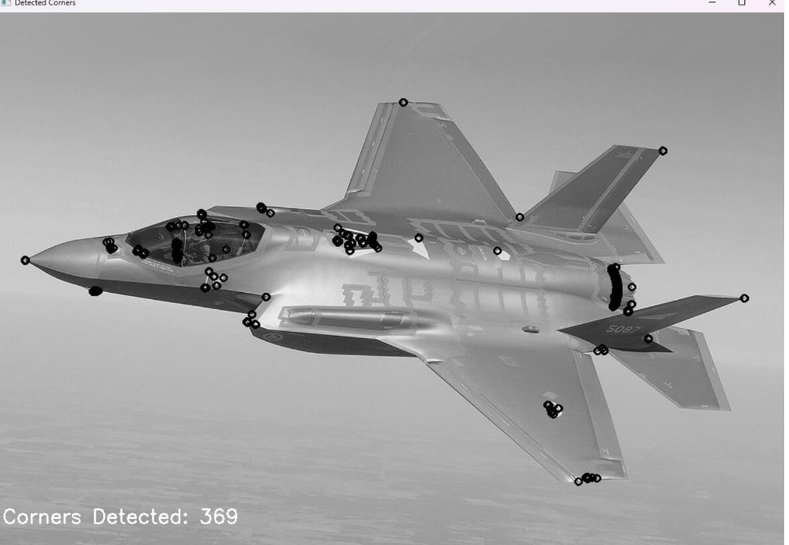
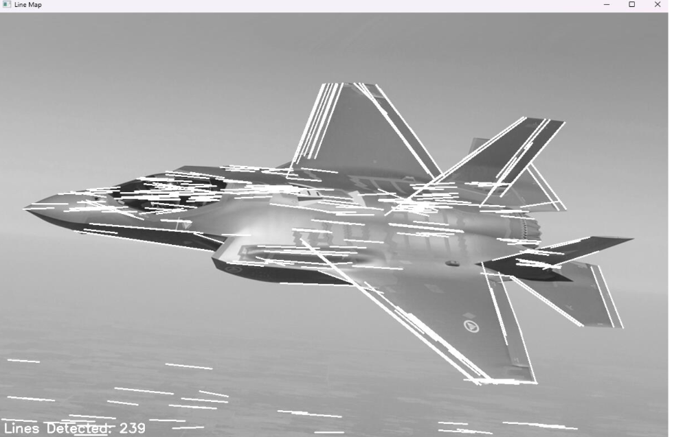

⚙️
Kontrol Sistemleri
PID Kontrol Nedir, Nerelerde Kullanılır?
Endüstriden günlük cihazlara kadar PID kontrol algoritmasının nasıl çalıştığını basit örneklerle açıklıyoruz...
📖 Devamını OkuElectrical & Electronics Engineer | Embedded Systems | Robotics | AI
C/C++, Python ve Embedded C dillerinde uzmanlaşmış; STM32, DSP ve FPGA platformlarında deneyimli bir mühendisim. ROS tabanlı robotik sistemler, otonom UAV projeleri, yapay zekâ (YOLO, TensorFlow, PyTorch) ve bilgisayarla görme alanlarında çalışıyorum. Ayrıca IoT, PCB tasarımı ve gerçek zamanlı sistemler üzerine projeler geliştirerek endüstriyel ve akademik çözümler üretiyorum. ⚡
🔍 Keşfetmeye BaşlaTutkulu bir geliştirici olarak teknolojinin sınırlarını zorlamayı ve yaratıcı çözümler üretmeyi seviyorum
Eskişehir Osmangazi Üniversitesi Elektrik-Elektronik Mühendisliği bölümünden 3.40/4.00 not ortalaması ile bölüm 3.’sü olarak şeref öğrencisi derecesiyle mezun oldum. Ayrıca Anadolu Üniversitesi’nde Bilgisayar Programcılığı eğitimimi tamamlayarak yazılım altyapımı güçlendirdim.
Kariyerimi gömülü sistemler, yapay zekâ, robotik ve otonom teknolojiler üzerine inşa ediyorum. C/C++, Python ve Embedded C dillerinde güçlü bir temele sahibim; STM32 mikrodenetleyiciler, TMS320 DSP işlemcileri, FPGA tabanlı sistemler ve ROS ekosistemi ile kapsamlı projeler geliştirdim. Yazılım ile donanımı entegre ederek gerçek zamanlı, güvenilir ve yüksek performanslı çözümler üretmeye odaklanıyorum.
Akademik ve endüstriyel deneyimlerim boyunca otonom UAV sistemleri, tarımsal robotlar, bilgisayarla görme tabanlı yapay zekâ çözümleri, sinyal işleme ve IoT uygulamaları üzerinde çalıştım. Özellikle YOLO tabanlı nesne tanıma, TensorFlow/PyTorch ile AI modelleme ve derin öğrenme algoritmaları konularına yoğunlaştım. Bunun yanı sıra PCB tasarımı, güç elektroniği ve haberleşme protokolleri üzerine de deneyimim bulunuyor.
Edindiğim tecrübeleri stajlarla pekiştirdim:
Kariyer vizyonum; elektronik, yazılım ve yapay zekâyı birleştirerek geleceğin otonom sistemlerini ve akıllı teknolojilerini hayata geçirmek. Sürekli öğrenmeyi, yenilikçi düşünmeyi ve disiplinler arası işbirliğini ilke edindim. Global ölçekte katma değer sağlayan projeler geliştirmek ve mühendislik alanında fark yaratmak en büyük motivasyonum. 🌍✨
Gömülü sistemler, C++ ve Python alanında eğitimler veriyor, öğrencilere ve mühendislere yol gösteriyorum. 👩🏫
Elektronik, yapay zeka ve otonom sistemler üzerine projeler geliştiriyor, yenilikçi çözümler üretiyorum. 🚀
Geleceğin teknolojilerini bugünden keşfediyor, yapay zeka ile sınırları zorluyor ve her gün yeni şeyler öğreniyorum! ✨
Modüler Savaşan İHA Yer Kontrol Sistemi (PyQt5 + MAVLink).
⭐ 1 🔧 Python, QtC++ ve OpenCV ile geliştirilmiş, güçlü ve modüler görüntü özellik tespit aracı.
⭐ 2 🔧 Python, QtKullandığım Diller
Proje Türleri
Proje Zaman Dağılımı
Teknolojiyi mühendislik, yapay zekâ ve gömülü sistemlerle birleştiriyorum.
NumPy, Pandas, Scikit-learn, PyTorch, TensorFlow, OpenCV, PyQt5, Pygame, Matplotlib, Seaborn, FastAPI, Flask
👉 Daha fazla bilgi için tıklayın
STM32, TMS320F28335 DSP, FPGA (Zynq), OOP, Qt, gerçek zamanlı sistemler, algoritma optimizasyonu
👉 Daha fazla bilgi için tıklayın
ROS1 (Noetic), ROS2, Gazebo, RViz, SLAM, Move Base, Navigation Stack, teleoperation, sensor fusion
👉 Daha fazla bilgi için tıklayın
STM32, TMS320F28335 DSP, FPGA (Zynq), FreeRTOS, PCB design, UART, SPI, I2C, CAN Bus
👉 Daha fazla bilgi için tıklayın
YOLOv8, YOLOv5, Roboflow, Albumentations, OpenCV, Scikit-Image, real-time object detection
👉 Daha fazla bilgi için tıklayın
PyQt5 GUI, Pygame, modular OOP design, REST APIs, WebSockets, Git/GitHub CI/CD
👉 Daha fazla bilgi için tıklayın
PX4, ArduPilot, Mission Planner, MAVLink, PID Control, tiltrotor VTOL, telemetry
👉 Daha fazla bilgi için tıklayın
FFT, FIR/IIR filters, ADC/PWM, tone detection, MATLAB, GNU Octave, audio DSP, spectral analysis
👉 Daha fazla bilgi için tıklayın
İnovatif fikirlerden gerçek çözümlere dönüştürdüğüm projelerim
Mission Planning & Telemetry - Ground Control System (GCS)
PyQt5 tabanlı modern arayüz, MAVLink protokolü ve çoklu iş parçacığı (multi-threading) mimarisiyle geliştirilen bu Yer Kontrol Sistemi (GCS), İHA’ların hem manuel hem de otonom kontrolünü sağlar. Gerçek zamanlı telemetri, harita tabanlı görev planlama, LiDAR entegrasyonu, elektronik harp ve GPS spoofing gibi ileri seviye modüller içerir. OOP tabanlı modüler yapısı sayesinde kolayca genişletilebilir ve farklı UAV platformlarına entegre edilebilir.
Autonomous Ground Control System (GCS)
V-Tail Fighter UAV – Autonomous GCS, V-Tail konfigürasyonuna sahip insansız hava araçları için geliştirilmiş modüler bir yer kontrol sistemidir. PyQt5 arayüzü, MAVLink tabanlı haberleşme ve multi-threading mimarisi sayesinde telemetri, görev planlama, video aktarımı ve manuel/otonom kontrol işlemlerini eşzamanlı yürütür. YOLOv8 nesne tespiti, servo & güç izleme, pre-flight checklist ve post-flight analiz gibi gelişmiş özellikleriyle güvenilir, esnek ve ölçeklenebilir bir çözüm sunar.
C++ ve OpenCV ile geliştirilmiş, güçlü ve modüler görüntü özellik tespit aracı.
C++ ve OpenCV kullanılarak geliştirilmiş ileri seviye bir görüntü işleme uygulamasıdır. Çizgi, köşe ve kenar gibi temel özelliklerin hassas şekilde tespit edilmesini sağlar ve nesne yönelimli programlama (OOP) mimarisi ile modüler olarak tasarlanmıştır. Kullanıcılar, farklı görüntü işleme algoritmalarını kolayca entegre edebilir, parametreleri değiştirerek sonuçları gerçek zamanlı test edebilir. Geliştirilen yapı, akademik çalışmalar, bilgisayarla görme projeleri ve endüstriyel görüntü analizi senaryoları için esnek ve genişletilebilir bir çözüm sunar.
Modüler C++ ve OpenCV tabanlı K-Means kümeleme çözümü
Bu proje, C++ ile geliştirilen K-Means kümeleme algoritmasını ileri seviye OOP prensipleriyle uygular ve sonuçları Gnuplot kullanarak görselleştirir. Modüler yapısı, farklı veri setleri üzerinde kolay uyarlanabilirlik sağlarken; akademik çalışmalar, veri bilimi uygulamaları ve algoritma analizi için güçlü ve esnek bir temel sunar.
PyQt5 tabanlı gerçek zamanlı görüntü işleme aracı – Edge Detection, Segmentation ve Conversion destekli
PyQt5 tabanlı gerçek zamanlı görüntü işleme aracı. RGB → HSV/Gray dönüşümleri, kenar tespiti (Roberts, Sobel, Scharr, Prewitt) ve segmentasyon (Multi-Otsu, Chan-Vese, Morph) yöntemlerini destekler.
Akıllı tarım robotu için PyQt5 tabanlı kontrol paneli; görüntü analizi, otonom/manüel mod, sensör takibi ve hava durumu özellikleri içerir.
AgriEdge, tarım robotlarını kontrol etmek için geliştirilmiş bir kullanıcı arayüzüdür. PyQt5 ile hazırlanmış arayüzüyle hem otonom hem manüel modda çalışabilir, RGB görüntü analizi yapar, sensör verilerini gerçek zamanlı izler ve entegre hava durumu tahminiyle çiftçiye karar destek sistemi sunar.
İki farklı PCB tasarımı: 12V lineer güç kaynağı ve Li-Ion pil şarj + 5V boost dönüştürücü devresi.
12V DC Power Supply PCB, köprü diyot, filtre kondansatörleri ve L7812 regülatör entegresi kullanılarak tasarlanmış güvenilir bir doğrultucu ve regülatör devresidir.
Li-Ion Charger Boost PCB, TP4056 şarj entegresi ve TPS61040 boost konvertörü kullanılarak tek hücreli Li-Ion pilleri şarj eder ve 5V çıkış üretir. USB giriş/çıkış portları, LED şarj/dolu göstergeleri ve koruma diyotlarıyla tamamlanmıştır.
Her iki tasarım da şematik, 2D/3D PCB görselleri ve Gerber dosyaları ile GitHub üzerinden paylaşıma açıktır.
TI TMS320F28335 DSP üzerinde gerçek zamanlı 128-nokta FFT uygulaması.
Bu proje, ADC’den alınan zaman domeni sinyallerini frekans domenine dönüştüren 128-nokta FFT algoritması içerir. Gerçek zamanlı gömülü çalışmaya uygun olacak şekilde optimize edilmiş C kodu ile en baskın iki frekans bileşeni otomatik olarak tespit edilir. Yüksek çözünürlüklü donanım zamanlayıcıları sayesinde FFT’nin çalışma süresi ölçülür ve büyüklük spektrumu hesaplanır. Eğitim, araştırma ve sinyal işleme uygulamaları için güçlü bir örnektir.
Telemetri paneli görünümü
Harita tabanlı görev planlama
Gerçek Zamanlı Failsafe Monitörü (Dashboard Görünümü)
Gerçek Zamanlı Failsafe Monitörü (Grafikler Sekmesi)
Görev Komuta Merkezi – Görev Planlama
Uçuş Telemetri Grafik Paneli

Gazebo Simülasyon Ortamı
MAVSDK Preflight Check
AI Destekli Hava Durumu ve Uçuş Analizi

Açıklama: ESSirius GCS – Autonomous Flight, insansız hava araçlarının (İHA/UAV) kontrolü için geliştirilmiş, modern ve modüler bir yer kontrol sistemi (Ground Control System – GCS) yazılımıdır. Proje, yalnızca bir arayüzden ibaret olmayıp, uçuşun her aşamasını kapsayan kapsamlı bir mimariye sahiptir. Yazılımın çekirdeği, MAVLink protokolü üzerinden araçlarla doğrudan haberleşmeye dayanır. Bu sayede sistem, uçuş sırasında telemetri verilerini gerçek zamanlı olarak alabilir, komutları anında iletebilir ve kullanıcıya hızlı geri bildirim sunabilir.
Proje mimarisi, çoklu iş parçacığı (multi-threading) kullanılarak inşa edilmiştir. Böylece telemetri akışı, görev yönetimi, arayüz güncellemeleri ve haberleşme işlemleri birbirinden bağımsız ve senkronize şekilde yürütülmektedir. Bu yapı, yüksek güvenilirlik ve kesintisiz bir kullanıcı deneyimi sağlar. Ek olarak, yazılım nesne yönelimli programlama (OOP) ilkelerine uygun şekilde tasarlanmış olup, her modül bağımsız sınıflar halinde geliştirilmiştir. Bu yaklaşım, sistemin farklı İHA platformlarına kolayca uyarlanmasını ve yeni modüllerin sorunsuzca eklenmesini mümkün kılar.
Uygulama arayüzü, PyQt5 kullanılarak geliştirilmiş modern ve sezgisel bir tasarıma sahiptir. Kullanıcı, harita tabanlı görev planlama ekranı üzerinden uçuş rotalarını belirleyebilir, waypoint’ler ekleyebilir ve farklı uçuş modları (AUTO, GUIDED, RTL vb.) arasında kolayca geçiş yapabilir. Ayrıca manuel kontrol modülü, hız, irtifa ve yön gibi parametrelerin hassas bir şekilde yönetilmesine olanak tanır.
Proje yalnızca temel kontrol işlevleriyle sınırlı değildir; aynı zamanda ileri seviye özellikler de içerir. Bunlar arasında gerçek zamanlı telemetri loglama, LiDAR entegrasyonu ile çevresel veri toplama, GPS spoofing testleri ve elektronik harp (EH) senaryoları yer almaktadır. Bu sayede yazılım, yalnızca standart uçuş operasyonları için değil, aynı zamanda savunma ve güvenlik odaklı araştırmalar için de güçlü bir araç haline gelmektedir.
Sonuç olarak, ESSirius GCS – Autonomous Flight, hem akademik hem de endüstriyel kullanıma hitap eden, modern, güvenilir ve ölçeklenebilir bir İHA kontrol yazılımıdır. Modüler yapısı, genişletilebilir mimarisi ve çok yönlü özellikleriyle, günümüzün hızla gelişen insansız hava aracı teknolojilerine yenilikçi bir çözüm sunmaktadır.
Kullanılan Teknolojiler: Python, PyQt5, MAVLink, Multi-threading, Object-Oriented Programming (OOP), Harita API (Mission Planning), Telemetri Loglama, LiDAR entegrasyonu, GPS Spoofing, Elektronik Harp (EH) modülleri
Yapım Süresi: 7 Ay
Edge Map (High Threshold)

Edge Map (Low Threshold)
Corner Detection
Line Detection
Açıklama: Advanced C++ Image Feature Detection, bilgisayar görüsü alanında nesnelerin kenar, köşe ve çizgi gibi temel özniteliklerini çıkarmak için geliştirilmiş modern bir görüntü işleme uygulamasıdır. Proje, yalnızca basit bir filtreleme aracı değil; farklı öznitelik çıkarım yöntemlerini tek bir çatı altında sunan kapsamlı bir sistemdir. Çekirdek yapı, OpenCV kütüphanesi üzerine inşa edilmiştir ve yüksek verimlilik için C++ dilinin performans avantajlarından yararlanır.
Uygulama mimarisi modüler bir tasarıma sahiptir. Edge Detection, Corner Detection ve Line Detection gibi farklı algoritmalar bağımsız sınıflar halinde uygulanmış, böylece hem okunabilirlik hem de esneklik artırılmıştır. Bu yaklaşım, yeni algoritmaların veya geliştirmelerin projeye kolayca eklenmesine olanak tanır. Ayrıca, kullanıcıya gerçek zamanlı olarak sonuçları görme imkanı sağlayan dinamik bir arayüz de mevcuttur.
Proje, özellikle savunma, havacılık ve endüstriyel görüntü işleme alanlarına yönelik bir altyapı sunar. Örneğin, bir uçak üzerinde köşe, kenar ve çizgi haritalarının çıkarılması; hem yapısal analiz hem de bilgisayarlı görü tabanlı takip sistemleri için kritik öneme sahiptir. Bu sayede uygulama, yalnızca akademik deneyler için değil, gerçek dünya senaryolarında da kullanılabilir bir çözüm sunmaktadır.
Sonuç olarak, Advanced C++ Image Feature Detection; modüler yapısı, optimize edilmiş algoritmaları ve OpenCV’nin güçlü fonksiyonları ile modern bir görüntü işleme çözümüdür. Bu proje, hem bilgisayar görüsü öğrenmek isteyenler hem de endüstriyel uygulamalarda kullanılabilecek hızlı ve güvenilir bir öznitelik çıkarım sistemi arayanlar için değerli bir kaynaktır.
Kullanılan Teknolojiler: C++, OpenCV, Object-Oriented Programming (OOP), Edge Detection, Corner Detection, Line Detection, Image Processing Algorithms
Yapım Süresi: 2 Ay
128-Point FFT Blok Diyagramı

TI TMS320F28335 Geliştirme Kartı

Açıklama: DSP-Based 128-Point FFT Spectral Analysis, Texas Instruments TMS320F28335 DSP üzerinde gerçek zamanlı çalışan bir 128 nokta FFT uygulamasıdır. Çalışmanın amacı, ADC’den alınan dijital örnekler üzerinde iki baskın sinüzoidal frekans bileşenini tespit etmek ve FFT algoritmasının performansını mikro-saniye seviyesinde ölçmektir .
Yöntem:
- Giriş verileri x_buffer_6.h dosyasından alınarak kompleks diziye dönüştürüldü.
- FFT için 128 adet twiddle factor önceden hesaplandı.
- FFT128() fonksiyonu kullanılarak zaman domeni → frekans domeni dönüşümü yapıldı.
- Karmaşık spektrumdan genlikler hesaplanıp iki en büyük tepe değeri bulundu.
- İndeksler frekans eksenine çevrilerek baskın frekanslar elde edildi .
Sonuçlar: - Tespit edilen frekanslar ≈ 500 Hz ve 1375 Hz - Gerçek frekanslar: 475 Hz ve 1374 Hz - Hata payı: %5.26 (ilk frekansta), %0.073 (ikinci frekansta) - FFT yürütme süresi: 87 µs (240.800 clock cycle @150 MHz)
Teknik Çıkarımlar: - 128-nokta FFT için frekans çözünürlüğü Δf = 62.5 Hz’dir. Daha yüksek doğruluk için en az 512 noktalı FFT gerekir. - Windowing uygulanmadığında spektral sızıntı gözlemlenebilir. - DMA kullanımı ve Radix-4 FFT algoritmaları performansı artırabilir .
Sonuç olarak bu proje, DSP tabanlı sinyal işleme konusunda hem eğitimsel hem de endüstriyel uygulamalar için güçlü bir örnek teşkil etmektedir. Gerçek zamanlı spektral analiz, gömülü sistemlerde frekans tespiti, hata analizi ve performans optimizasyonu açısından değerli kazanımlar sağlamaktadır.
Kullanılan Teknolojiler / Bileşenler: TI TMS320F28335 DSP, Code Composer Studio, 128-Point FFT, C dili, CPU Timer0, Twiddle Factors, Magnitude Spectrum Hesaplama, Peak Detection
Geliştirme Süresi: 4 Hafta
TÜBİTAK destekli projede proje yöneticisi olarak görev alıyorum.

C, C++, Matlab, Gömülü yazılım, kontrol sistemleri, VHDL/Verilog, görüntü işleme ve makine öğrenmesi alanlarında öğrencilere eğitim verdim.
Savronik firmasında özgün ürün geliştirme süreçlerinde stajyer olarak görev aldım.
Buzdolabı Fabrikasında AR-GE Elektriksel Tasarım Grubunda staj yaptım. SAP/ERP, PCB tasarım, gömülü yazılım testleri, sensör tabanlı takip, enerji optimizasyonu ve algoritma geliştirme üzerine çalıştım.
Sirius Havacılık’ta aviyonik ekip liderliği, proje yönetimi, yazılım geliştirme ve sistem entegrasyonu üzerine çalıştım.
Teknoloji, AI ve geliştirme hakkında yazılarım ve düşüncelerim
Endüstriden günlük cihazlara kadar PID kontrol algoritmasının nasıl çalıştığını basit örneklerle açıklıyoruz...
📖 Devamını OkuAlternatif akım ve doğru akım arasındaki temel farklar, günlük yaşamda ve endüstride kullanım alanları...
📖 Devamını Okuİki farklı donanım yaklaşımı: Mikrodenetleyici ve FPGA. Hangi durumda hangisi tercih edilmeli?...
📖 Devamını OkuAkıllı cihazların sunduğu kolaylıkların yanında, güvenlik riskleri de hayatımıza giriyor. IoT güvenliğini neden ciddiye almalıyız?...
📖 Devamını OkuHaftalık tech newsletter'ıma abone olun ve yeni yazılardan haberdar olun
📧 Newsletter'a Abone OlYeni projeler, işbirliği fırsatları veya sadece merhaba demek için benimle iletişime geçin!
✨ Birlikte harika projeler yaratmaya hazır mısınız? İster yeni bir fikriniz olsun, ister mevcut projenizi geliştirmek isteyin - her zaman yardımcı olmaktan mutluluk duyarım!